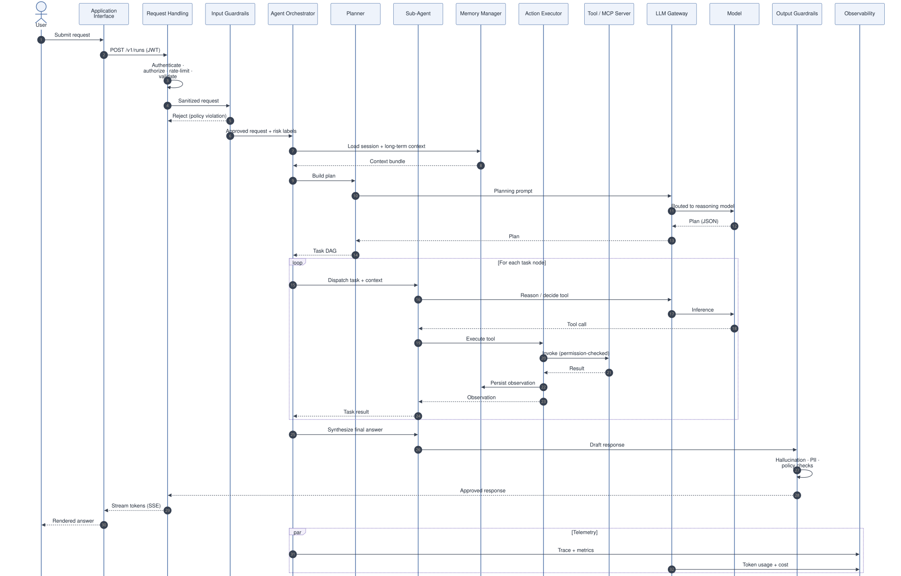

2.1 Overview
The architecture is a layered, service-oriented system. Requests enter through Layer 1, are authenticated and shaped by the Request Handling block of Layer 2, screened by input guardrails (Layer 5), executed by the agent runtime, which draws on memory (Layer 4), tools (Layer 3) and models through the gateway (Layers 6 and 7), and leave through output guardrails back to the user. Layers 8 to 12 wrap around all of that.
A few architectural decisions shape everything downstream:
- The runtime is separated from the models. Agents never hold provider credentials or call a vendor API directly. All inference goes through the LLM gateway. This is what makes routing, failover, cost control and model versioning possible without touching agent code.
- Tools are separated from agents. Agents emit intents (structured tool calls). The action executor decides whether and how to carry them out. Permission, validation, retries and sandboxing live in the executor, not in prompts.
- Memory is a service, not a prompt. The memory manager assembles a bounded context bundle from several stores. Agents cannot silently grow the context or read another tenant's data.
- Guardrails are on the boundary, twice. Input guardrails run before any model sees user text; output guardrails run before any user sees model text. Tool results are treated as untrusted input as well.
- Every step is a span. The orchestrator, executor and gateway emit OpenTelemetry traces, so a single run is reconstructible end to end.
2.2 The request lifecycle

Mermaid source diagrams/system-flow.mmd
flowchart LR
subgraph L1["1. Users & Channels"]
U[Web / Mobile / Slack / API / Voice]
end
subgraph L2["2. Orchestration Layer"]
RH[Request Handling<br/>auth · session · rate limit · validation]
ORCH[Agent Orchestrator]
PL[Planner / Reasoner]
SA[Sub-Agents<br/>Researcher · Analyst · Coder]
MM[Memory Manager]
AE[Action Executor]
end
subgraph L5["5. Guardrails"]
IG[Input Guardrails]
OG[Output Guardrails]
end
subgraph L3["3. Tools & Integrations"]
T[Search · DB · APIs · Enterprise · Sandbox · Storage · Messaging]
end
subgraph L4["4. Context & Memory"]
M[(Short-term · Long-term<br/>Vector Store · Knowledge Graph)]
end
subgraph L6["6. LLM Gateway"]
GW[Routing · Failover · Caching · Cost]
end
subgraph L7["7. Models"]
LLM[Proprietary & Open-Source LLMs]
end
subgraph L8["8. Observability"]
OBS[Logs · Traces · Metrics · Evals]
end
U -->|HTTPS / WSS| RH --> IG --> ORCH --> PL --> SA
SA <--> MM <--> M
SA --> AE --> T
T -->|results| AE --> SA
SA -->|prompts| GW --> LLM --> GW --> SA
SA --> OG --> RH -->|stream| U
ORCH -.-> OBS
AE -.-> OBS
GW -.-> OBS
A typical request passes through the following stages. The numbers correspond to the sequence diagram below.
- Ingress. A channel (web app, Slack bot, API client) sends an HTTPS request or opens a WebSocket. It carries a bearer token from the identity provider and a session identifier.
- Request handling. The receiver authenticates the token, resolves roles and attributes, checks rate limits and quotas, validates the payload against a schema and loads or creates the session.
- Input guardrails. Deterministic checks (schema, injection heuristics, secrets, PII) and model-based classifiers run. The request is rejected, masked or passed on with risk labels.
- Context assembly. The orchestrator asks the memory manager for a context bundle: recent turns, a rolling summary, user preferences, semantically similar memories and related entities, trimmed to a token budget.
- Planning. The planner calls a reasoning model through the gateway and returns a task graph: tasks, the sub-agent responsible for each, dependencies and acceptance criteria.
- Execution. For each task the orchestrator runs a bounded ReAct loop in the appropriate sub-agent. Tool calls go through the action executor, which enforces permissions and may pause for human approval. Observations are written to memory.
- Reflection and synthesis. A reviewer step critiques the aggregated results; if acceptable, a generation model writes the final deliverable.
- Output guardrails. The draft is validated, checked for grounding against the collected evidence, masked for PII and screened for policy. Failed drafts are regenerated with feedback or replaced by a safe response.
- Delivery. Tokens are streamed to the channel. The turn is persisted. Telemetry (trace, tokens, cost, guardrail verdicts) is exported.

Mermaid source diagrams/sequence-lifecycle.mmd
sequenceDiagram
autonumber
actor User
participant App as Application Interface
participant RH as Request Handling
participant IG as Input Guardrails
participant ORCH as Agent Orchestrator
participant PL as Planner
participant SA as Sub-Agent
participant MEM as Memory Manager
participant AE as Action Executor
participant TOOL as Tool / MCP Server
participant GW as LLM Gateway
participant LLM as Model
participant OG as Output Guardrails
participant OBS as Observability
User->>App: Submit request
App->>RH: POST /v1/runs (JWT)
RH->>RH: Authenticate · authorize · rate-limit · validate
RH->>IG: Sanitized request
IG-->>RH: Reject (policy violation)
IG->>ORCH: Approved request + risk labels
ORCH->>MEM: Load session + long-term context
MEM-->>ORCH: Context bundle
ORCH->>PL: Build plan
PL->>GW: Planning prompt
GW->>LLM: Routed to reasoning model
LLM-->>GW: Plan (JSON)
GW-->>PL: Plan
PL-->>ORCH: Task DAG
loop For each task node
ORCH->>SA: Dispatch task + context
SA->>GW: Reason / decide tool
GW->>LLM: Inference
LLM-->>SA: Tool call
SA->>AE: Execute tool
AE->>TOOL: Invoke (permission-checked)
TOOL-->>AE: Result
AE->>MEM: Persist observation
AE-->>SA: Observation
SA-->>ORCH: Task result
end
ORCH->>SA: Synthesize final answer
SA->>OG: Draft response
OG->>OG: Hallucination · PII · policy checks
OG-->>RH: Approved response
RH-->>App: Stream tokens (SSE)
App-->>User: Rendered answer
par Telemetry
ORCH->>OBS: Trace + metrics
GW->>OBS: Token usage + cost
end
2.3 The four flows
The legend of the architecture diagram separates four kinds of interaction. Keeping them distinct in the implementation matters because they have different latency, reliability and security requirements.
| Flow | Direction | Transport | Requirements |
|---|---|---|---|
| Request flow | User → runtime → tools/models → user | HTTPS, SSE/WebSocket for streaming; internal gRPC or HTTP | Low latency, cancellation, back-pressure |
| Control flow | Orchestrator → planner → sub-agents; guardrails → runtime; gateway → providers | In-process (graph edges) or message queue for long runs | Determinism, bounded loops, resumability |
| Data flow | Runtime ↔ memory stores; services → observability | Database drivers, OTLP | Tenant isolation, consistency, retention |
| Feedback loop | Observability/HITL → datasets → prompts, policies, models | Batch pipelines, CI | Reproducibility, versioning |
Decision flow is a sub-case of control flow that deserves its own mention: at each ReAct step the model decides continue / call tool / finish / escalate. Those decisions are what the architecture must bound (max steps, token budget), record (tracing) and sometimes intercept (guardrails, HITL).
2.4 Layer 1: Users & Channels
2.4.1 Purpose
Layer 1 is every surface through which a request originates. The diagram lists web, mobile and desktop apps, Slack/Teams, API clients, voice/IoT and enterprise users. The layer's job is to present a consistent product experience over a single backend contract, so that channel-specific concerns (rendering, push notifications, voice transcription) never leak into the agent runtime.
2.4.2 Supported interfaces
| Channel | Typical stack | Auth pattern | Streaming | Notes |
|---|---|---|---|---|
| Web application | React / Next.js, TypeScript | OIDC authorization-code + PKCE | SSE or WebSocket | Primary surface; rich rendering of citations, tables, approvals |
| Mobile application | Flutter, React Native, Swift/Kotlin | OIDC + refresh tokens in secure storage | SSE with reconnection | Handle background/foreground and offline queues |
| Desktop application | Electron, Tauri | Same as web | WebSocket | Can host local MCP tools (file system, IDE) |
| Slack / Teams | Bolt SDK, Bot Framework | App-level token + user mapping | Message edits (progressive updates) | Thread = session; slash commands map to intents |
| API clients | REST/GraphQL SDKs | OAuth2 client-credentials or API keys | SSE | Programmatic access; strict rate limits and quotas |
| Voice assistants / IoT | ASR → text → agent → TTS; MQTT for devices | Device certificates, scoped tokens | Chunked audio | Latency budget tight; use small models for intent detection |
| Enterprise users | SSO via corporate IdP (Entra ID, Okta) | SAML/OIDC, group claims | Any | Group claims drive RBAC in Layer 2 |
2.4.3 Frontend architecture
The frontend is a thin client. It owns rendering, local UI state and session tokens; it does not own conversation state (the backend does) and it never calls model providers. A typical Next.js layout:
app/(chat)/– conversation view, streaming renderer, approval cards for HITL, citation viewer.lib/api.ts– typed client for the backend contract (POST /v1/runs,GET /v1/runs/{id}/events).lib/auth.ts– OIDC flow, token refresh, silent renew.components/blocks/– renderers for structured output blocks (markdown, table, chart, file, approval request).
The renderer must be able to display partial results. Agentic runs are long; users need to see the plan, which task is running and intermediate tool results, not a spinner for two minutes.
2.4.4 API communication
Expose one small, stable contract:
POST /v1/runs
Authorization: Bearer <access_token>
Content-Type: application/json
{ "session_id": "sess_8f2...", "input": "Analyse competitors and prepare a business report",
"attachments": [], "options": { "stream": true } }
HTTP/1.1 202 Accepted
{ "run_id": "run_01J...", "events_url": "/v1/runs/run_01J.../events" }
GET /v1/runs/run_01J.../events
Accept: text/event-stream
event: plan data: {"tasks":[...]}
event: step data: {"task":"t1","agent":"researcher","tool":"web_search"}
event: token data: {"delta":"Acme's revenue grew"}
event: approval data: {"tool":"send_email","arguments":{...},"approval_id":"apr_..."}
event: done data: {"usage":{"total_tokens":48120},"cost_usd":0.61}
Separating submit from subscribe lets the run continue if the client disconnects, lets several clients (web and Slack) watch the same run, and maps directly onto a queue-backed worker model.
GraphQL is a reasonable choice when the frontend needs many shaped reads (session lists, run history, memory inspection); the run submission and event stream stay on REST/SSE either way.
2.4.5 Authentication flow
- The client redirects to the identity provider (Auth0, Keycloak, Entra ID, Okta, Cognito) using the authorization-code flow with PKCE.
- The IdP returns an ID token and a short-lived access token (JWT, 5–15 minutes) plus a refresh token.
- Every request carries the access token; the API validates signature, issuer, audience and expiry against the IdP's JWKS.
- Group and role claims are mapped to the internal principal object used for authorization and tool permissions.
- Service-to-service calls inside the platform use workload identity (Kubernetes service accounts with SPIFFE/SPIRE or cloud IAM), never user tokens.
2.4.6 Session management
A session is the unit of conversational continuity; a run is one request inside it. Sessions are stored server-side (Redis for hot state, PostgreSQL for history) and referenced by opaque IDs. The client never sends conversation history; it sends the session ID and the new input. This keeps the context window under backend control and prevents clients from injecting fabricated history.
2.4.7 Real-time streaming
Server-Sent Events are the default: they are unidirectional, work through most proxies, reconnect natively (Last-Event-ID) and are trivial to consume. WebSockets are used when the client needs to send mid-run input (cancel, answer a clarification, approve an action). Both must survive load balancers: set idle timeouts above the longest expected pause and send heartbeat comments every 15–30 seconds.
2.5 Request Handling (Layer 2, ingress block)
The Request Handling block of the orchestration layer contains six components. They are shown inside Layer 2 because they are the runtime's front door, but they are typically deployed as a separate stateless API service in front of the agent workers.
2.5.1 Request receiver
Responsibilities: terminate the API contract, route by path and version, enforce payload limits, assign a request/run ID, attach tracing context, and enqueue the run. Implementation: FastAPI (Python) or NestJS (TypeScript) behind an API gateway (AWS API Gateway, Kong, Envoy, Azure API Management) that handles TLS, WAF and coarse rate limiting.
2.5.2 Session manager
Loads or creates the session, validates that the caller owns it, and provides the session handle to the memory manager.
| Store | Use for | Why |
|---|---|---|
| Redis | Hot session state, recent turns, locks, rate-limit counters | Sub-millisecond, TTL support, atomic operations |
| PostgreSQL | Durable session and run history, audit | Transactions, relational queries, retention policies |
| DynamoDB | Same as PostgreSQL in serverless/AWS-native designs | Managed scaling, TTL attributes |
Guard against concurrent runs on the same session with a Redis lock (SET session:{id}:lock run_id NX PX 300000), otherwise two runs will interleave memory writes.
2.5.3 Authentication
Validate JWTs locally with cached JWKS; never call the IdP per request. Support OAuth2 client-credentials for machine clients, and SSO (SAML or OIDC federation) for enterprise tenants. Reject tokens with missing aud or with an iss not in the tenant's allow-list.
2.5.4 Authorization
RBAC answers what role can do; ABAC answers under which conditions. Agentic systems need both because tool permissions depend on data attributes (a finance analyst may read the ledger for their own cost centre only).
# Example policy (Cedar / OPA style)
permit(principal in Role::"analyst", action == Action::"call_tool", resource == Tool::"query_ledger")
when { resource.args.cost_center in principal.cost_centers };
forbid(principal, action == Action::"call_tool", resource in ToolGroup::"irreversible")
unless { context.approved_by != null };
Open Policy Agent (Rego), AWS Cedar or Casbin evaluate such policies in microseconds and keep authorization logic out of application code.
2.5.5 Rate limiting
Three limits at three levels:
- Edge: requests per second per IP/API key (API gateway or Envoy).
- Application: runs per user per minute and concurrent runs per session (Redis token bucket,
INCR+EXPIREor a Lua script). - Cost: tokens or dollars per tenant per day, enforced by the LLM gateway.
Cost limits are the ones that matter most: a single agentic run can consume 100× the tokens of a chat turn, so request-count limits alone do not prevent abuse.
2.5.6 Request validation
Validate with a schema (Pydantic, Zod) before the payload reaches any model: type, length, allowed attachment MIME types, allowed options. Reject early with a 4xx; malformed input should never reach the guardrails, let alone the planner.
2.6 Agentic design patterns
The runtime in Layer 2 is general enough to host several patterns. Choosing the right one is the first design decision for a given use case.
| Pattern | Mechanism | Strengths | Weaknesses | Use when |
|---|---|---|---|---|
| ReAct agent | Interleaved Thought → Action → Observation loop | Simple, adapts to observations, works with any tool-calling model | Greedy; can loop; no global plan | Single-agent tasks with unknown path, ≤ 10 steps |
| Planning agent (plan-and-execute) | Explicit plan first, then execute steps, re-plan on failure | Predictable, parallelisable, auditable | Plan may be wrong; extra latency | Multi-step tasks, cost-sensitive, needs approval of a plan |
| Reflection agent | Generator + critic loop (self-refine, reviewer model) | Higher quality, catches errors and hallucinations | Doubles cost; can over-refine | Reports, code, anything with quality bar |
| Multi-agent collaboration | Orchestrator + specialists sharing state | Separation of concerns, specialised prompts/tools/models | Coordination overhead, harder debugging | Heterogeneous tasks (research + analysis + code) |
| Tool-using agent | Model with function calling and a curated tool registry | Grounded actions, deterministic side effects | Tool sprawl, injection via tool output | Almost always; foundation for all others |
| Workflow agent | Deterministic graph with LLM nodes at fixed points | Reliable, testable, cheap | Not autonomous; cannot handle novel paths | Well-understood processes (ticket triage, document extraction) |
In the reference implementation the orchestrator is a planning agent, each sub-agent is a ReAct agent bounded by budgets, and a reflection step precedes synthesis. Workflow-style graphs are used where the process is known (for example, the RAG ingestion pipeline).
2.7 Best practices
- Version the API contract from day one (
/v1/). Agent behaviour will change weekly; the contract should not. - Return
202 Acceptedand stream events; never hold an HTTP request open for a multi-minute run. - Keep channels dumb. If Slack needs a different response format, add an output formatter in the action executor, not logic in the bot.
- Enforce cost quotas at the gateway and surface remaining budget to the user; blocked-for-budget is a better failure than a surprise invoice.
- Reject invalid input at the edge; log the rejection reason without logging the payload if it might contain secrets.